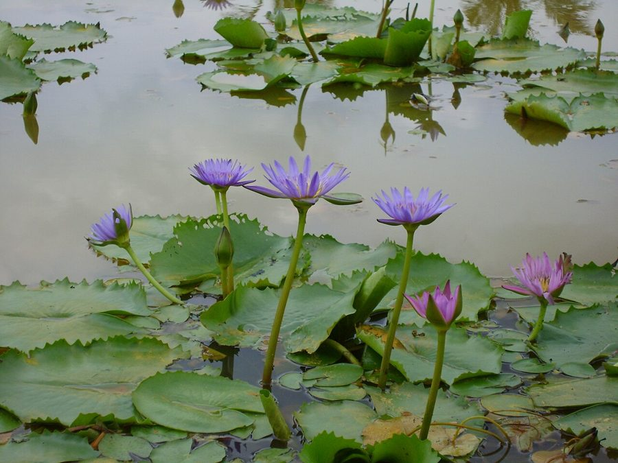

नीलकमलBlue Water Lily
Nymphaea nouchali · Nymphaeaceae · FLR-0028

- Scientific name
- Nymphaea nouchali Burm.f.
- Family
- Nymphaeaceae
- Hindi
- नीलकमल
- Status here
- native
- IUCN
- LC
When to look कब देखें
Present all year.
नीलकमल / Blue Water Lily
Nymphaea nouchali Burm.f. — Nymphaeaceae
नीलकमल — पूर्वी उत्तर प्रदेश के प्राकृतिक तालाबों और दलदली झीलों में खिलने वाला एक बेहद सुंदर और पवित्र जलीय फूल। इसके गोल पत्ते पानी की सतह पर चपटे तैरते हैं, जिनके किनारे लहरदार होते हैं और जड़ के पास एक गहरा वी (V) आकार का कट होता है। सुबह के समय खिलने वाले इसके तारे जैसे नीले-बैंगनी फूल और उनके बीच चमकीला पीला केंद्र हिंदू पूजा-पद्धति (विशेषकर दुर्गा पूजा) में पवित्र माने जाते हैं। यह पौधा जलीय पारिस्थितिकी तंत्र में पानी को ठंडा रखने और मछलियों को आश्रय देने में मदद करता है।
Quick Identification त्वरित पहचान
| Feature | Description |
|---|---|
| Habitat Class | Floating-leaved rooted aquatic plant; anchored by a buried perennial rhizome |
| Leaves | Round to oval (15–30 cm wide), floating flat on the water surface; margins wavy or undulating |
| Leaf Notch | Distinct deep V-shaped notch (sinus) at the base of the leaf extending to the stalk |
| Flowers | Star-shaped, solitary (5–15 cm across) with pale blue, violet, or lavender-pink petals and a yellow center |
| Flowering Habit | Opens in the morning (around 7–8 AM) and closes by mid-afternoon (around 2–3 PM) |
| Fruit | Globose, spongy berry that ripens underwater after the flower stalk curls downward |
Field tip: Unlike the sacred Lotus, whose leaves stand high above the water on tall stalks and have no notches, the Blue Water Lily has leaves that float flat on the water surface and have a deep V-shaped notch at the base. The star-like, pale blue or lavender flowers with yellow centers are diagnostic.
Morphology आकारिकी
Biometrics (typical measurements in the Gangetic plain):
| Feature | Measurement |
|---|---|
| Plant height (stem length) | 0.5–2.0 m |
| Leaf length (diameter) | 15–30 cm |
| Leaf width (diameter) | 12–28 cm |
| Flower diameter | 5–15 cm |
| Fruit dimensions | 1.5–3.0 cm |
Rhizome: A stout, erect, tuberous rootstock buried deep in the pond mud. It remains dormant during dry periods when ponds dry up.
Leaves: Broadly circular to elliptic (orbicular), 15–30 cm wide, floating flat on the water surface. Margins are wavy, undulating, or shallowly toothed. The leaf base has a deep V-shaped notch (sinus) where the spongy, air-filled petiole (leaf stalk) attaches. The upper surface is deep green, smooth, and waxy; the lower surface is often dark purplish-red or greenish-purple with prominent veins.
Flowers: Solitary, star-shaped, 5–15 cm in diameter, borne on long, spongy peduncles rising slightly above the water. Petals number 10–30, linear-lanceolate, typically pale blue, violet-blue, or lavender-pink, surrounding a center of numerous bright yellow stamens. Flowers are fragrant and open daily for 3–4 days.
Fruit: A globose, spongy berry, 1.5–3 cm in diameter, containing many small, arillate, ellipsoid seeds. After flowering, the peduncle curls, pulling the developing fruit underwater to ripen. The fruit eventually decays, releasing seeds that float briefly before sinking.
Ecological Role पारिस्थितिक भूमिका
Habitat creator. The floating leaves cast shade on the pond floor, regulating water temperature and reducing the growth of benthic algae. They provide shade and hiding spots for young fish, frogs, and aquatic insect larvae.
Pollinator host. The open flowers attract numerous honeybees (Apis dorsata, Apis cerana), beetles, and hoverflies. The bright yellow stamens provide a rich pollen source in the morning.
Food source. The starch-rich rhizomes and seeds are consumed by wild boars, herbivorous fish, and waterfowl. Water snails feed on the algae growing on the undersides of the leaves.
Life Cycle / Phenology जीवन चक्र
- Vegetative sprouting: Sprouts from the perennial rootstock in spring (March–April) as water temperatures rise.
- Flowering: Flowering starts in July and continues through November, peaking post-monsoon (September–October) when ponds are full.
- Fruiting: Fruits ripen underwater from August to December.
- Dormancy: In the cold dry season (December–February), the floating leaves die back and decay. The plant survives as a dormant rhizome in the mud.
Host Plants or Prey आहार
Associated organisms:
- Aquatic snails (Pila globosa) and insect larvae feed on the leaf tissues.
- Various micro-invertebrates and freshwater bryozoans shelter on the petioles.
Predators / Natural Enemies शत्रु
- Wild Boar (Sus scrofa) — digs up and consumes the dormant rhizomes in dry pond beds during summer.
- Herbivorous Fish (such as Grass Carp) — feed on the young submerged leaves.
- Leaf Spot Fungi — can cause premature browning and decay of the floating leaves.
Agricultural / Human Relevance कृषि प्रासंगिकता
Cultural and religious significance. The Neelkamal is highly sacred. The blue flowers are offered to deities in temples across Basti and eastern UP, especially during Durga Puja and Lakshmi Puja. It represents purity, detachment, and enlightenment. It is also the national flower of Bangladesh and Sri Lanka.
Traditional medicine. Used in Ayurveda as a cooling herb. Extracts of the flowers and rhizomes are used to treat fevers, skin disorders, and urinary infections.
Food. During historic famines, the rhizomes were dug out, boiled, and eaten as a source of starch. The small seeds are occasionally collected, roasted, and eaten.
Expected Locally स्थानीय रूप से अपेक्षित
Not a field record. Written from published accounts for eastern Uttar Pradesh. No confirmed local sighting yet — if you have seen it, that is what the atlas needs.
अभी तक स्थानीय पुष्टि नहीं। यह विवरण प्रकाशित स्रोतों से है, किसी अवलोकन से नहीं।
Commonly found growing wild in natural perennial ponds, roadside marshes, and undisturbed oxbow lakes (chaurs) throughout Basti district. Unlike Lotus and Water Chestnut, it is rarely cultivated commercially but forms a beautiful natural component of the local wetland flora. The blue-purple flowers are especially abundant and beautiful in October.
Distribution वितरण
Global range: Native across tropical and subtropical Asia, including Pakistan, India, Nepal, Bangladesh, Sri Lanka, Southeast Asia, and southern China.
In India: Widespread in plains and lowlands throughout all states and union territories.
In Uttar Pradesh: Common in natural ponds, temple tanks, and slow-moving streams across the state, particularly in the wetlands of eastern UP.
In Basti district / eastern UP: Common in natural waterbodies and oxbow lakes across the rural areas of the district.
Range notes: No significant range changes documented.
Research Questions शोध प्रश्न
Anyone can investigate these | कोई भी इन प्रश्नों की जाँच कर सकता है
- At what exact time do the flowers open and close in your village pond, and how does this change with cloud cover? / आपके गाँव के तालाब में फूल किस सटीक समय खुलते और बंद होते हैं, और बादलों के छाने से इस पर क्या प्रभाव पड़ता है? — Record opening and closing times on sunny vs. cloudy days.
- How do local community members harvest the flowers for temple offerings, and does this impact the plant population? / स्थानीय लोग पूजा के लिए फूल कैसे तोड़ते हैं, और क्या इससे नीलकमल की आबादी पर असर पड़ता है? — Observe flower harvesting and monitor flower production.
- What is the density of aquatic snails on the underside of Blue Water Lily leaves compared to Lotus leaves in the same pond? — Count and compare snail density on both plant species.
- How long can the rootstock survive in dry, cracked pond mud during severe summer droughts in Basti? / बस्ती में गर्मियों के सूखे के दौरान जड़ तालाब की सूखी, फटी मिट्टी में कितने समय तक जीवित रह सकती है? — Monitor regrowth in seasonal ponds after the first monsoon rains.
- Which bee species are the most frequent visitors to the flowers during the morning peak opening hours? — Identify and record bee visits between 8 AM and 11 AM.
Similar Species मिलती-जुलती प्रजातियाँ
| Species | How to tell apart | हिंदी |
|---|---|---|
| White Water Lily (Nymphaea pubescens) | Flowers are white or pinkish; opens at night; leaves have hairy undersides and sharper teeth | सफेद कुमुद — रात को खिलने वाला |
| Indian Lotus (Nelumbo nucifera) | Leaves held high above water on tall stalks; peltate leaf base (no notch); flowers much larger and pink/white | कमल — पानी से ऊपर उठा हुआ |
| Water Chestnut (Trapa bispinosa) | Leaves are diamond-shaped, smaller, in tight rosettes with swollen stems; fruits are thorny | सिंघाड़ा — तिकोने पत्ते, कांटेदार फल |
Field rule: Flat, floating round leaves with a deep V-notch and wavy edges, combined with star-like, pale blue or violet flowers that open in the morning, identify Nymphaea nouchali.
Taxonomy & Classification वर्गीकरण
Original description. Nymphaea nouchali was described by Nicolaas Laurens Burman in 1768 in his publication Flora Indica (p. 120). The type locality is the Coromandel Coast of India. The genus name Nymphaea is derived from the Greek nymphaia (water nymph), while the specific epithet nouchali is derived from the Telugu local name of the plant.
Subspecies. Monotypic — no subspecies are currently recognised.
Family and order placement. Placed in the order Nymphaeales, family Nymphaeaceae. The Nymphaeaceae is a primitive family of aquatic flowering plants representing one of the earliest lineages of angiosperms (basal angiosperms).
Phylogenetic notes. Molecular phylogenetic studies (such as Borsch et al., 2007) place Nymphaea nouchali in the subgenus Brachyceras. It is a key evolutionary link in early flower structure development.
IUCN status rationale. Listed as Least Concern (LC). The species has an extremely large geographic distribution and is highly abundant in natural and artificial wetlands, though localized threats exist from habitat destruction and agricultural pollution.
Photo Gallery फोटो गैलरी
References संदर्भ
- Burman, N.L. (1768). Flora Indica: cui accedit series zoophytorum indicorum, nec non prodromus florae capensis. Cornelium Haek, Amsterdam, p. 120.
- Hooker, J.D. (1872). Flora of British India. Vol. 1. L. Reeve & Co., London.
- Cook, C.D.K. (1996). Aquatic and Wetland Plants of India. Oxford University Press, Oxford.
- Borsch, T., Hilu, K.W., Wiersema, J.H., Löhne, C., Barthlott, W. & Wilde, V. (2007). Phylogeny of Nymphaea (Nymphaeaceae). International Journal of Plant Sciences, 168(5), 639–656.
- Botanical Survey of India — Flora of Uttar Pradesh.
- GBIF Occurrence Data — Nymphaea nouchali, Uttar Pradesh (2010–2025).
Source file: species/flora/aquatic/blue_water_lily.md